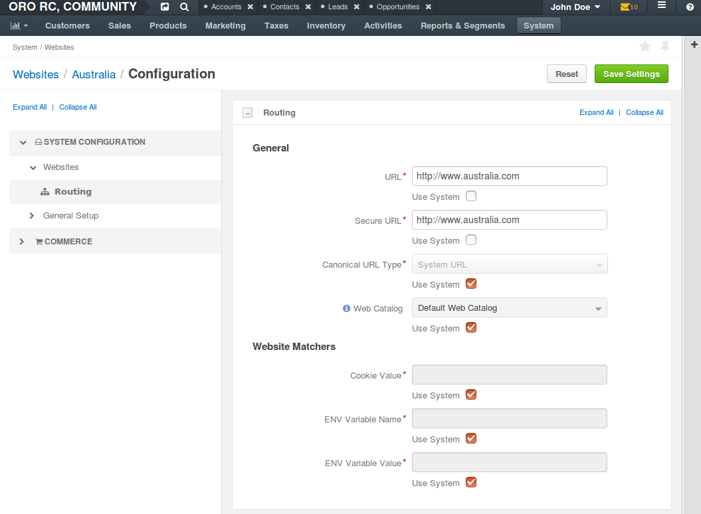

Configure a Website¶
By default, global system configuration settings apply to all newly created websites.
To define the custom configuration options for the particular website:
Navigate to System > Websites using the main menu.

Click on the website you would like to customize configuration for (e.g. Australia).

On the website details page, click Configuration. The following page opens:
In the System Configuration section, you may override the global system configuration for the following option groups:
- Websits Routing
- Websits Sitemap
- Website Localization
- Email Configuration for the Website
In the Commerce section, you may override the global system configuration for the following option groups:
- Customers: Customer Users
- Design: Theme
- Inventory: Warehouse
- Inventory: Product Options
- Inventory: Limitations
- Inventory: Allowed Statuses
- Sales: Request For Quote
- Sales: Quick Order Form
- Catalog: Pricing
Note
Once you are done customizing the global system configuration settings in the option group, click Save Settings.